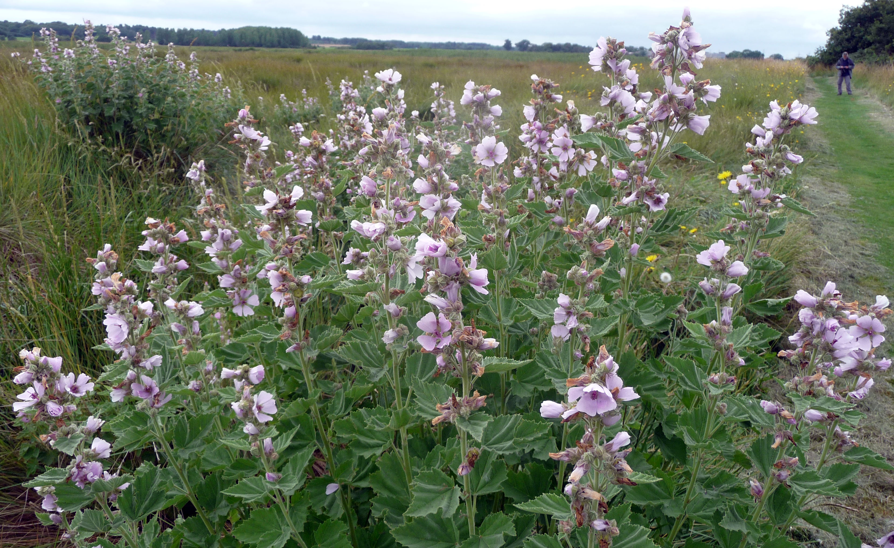

Althaea officinalis
| common name | marshmallow | |
| en español | malvavisco | |
| plant family | Malvaceae (mallow) | |
| parts used | fresh and dried leaves and root |
 from Wikimedia Commons by gailhampshire from Cradley, Malvern, U.K - Althaea officinalis. Marsh Mallow, CC BY 2.0
observations/description
dried root
- light beige/ecru color, bristly/slightly fluffy roots in small, long strands/pieces
- earthy aroma, evoking soil and chocolate
"Althaea officinalis", Wikipedia
- whole plant is softly stellate-hairy, especially the leaves
- leaves are broadly triangular to oval, often with 3-5 shallow lobes, irregularly toothed, with cordate to cuneate bases; leaves arranged alternately along the stem
- inflorescences occur in the leaf axils and at the top of the stem
- flowers are actinomorphic (radial symmetry) with 5 lilac/pink petals up and 5 green sepals which are much shorter than the petals, and fused at the base
- the purple stamens are united into a tube, the anthers kidney-shaped and one-celled
distribution/conservation status
"Althaea officinalis", Wikipedia
- indigenous to Europe, Western Asia, and North Africa
- easy to grow and tolerates a wide range of conditions, though does best in fertile, moist but well-drained soil in full sun
primary actions
The Yoga of Herbs, p. 128-9
- nutritive tonic, rejuvenative, demulcent, expectorant, emollient, diuretic, vulnerary, laxative, anti-inflammatory, lung tonic
The Modern Herbal Dispensatory, p. 265-6
- demulcent, diuretic, emollient, galactagogue, nutritive, vulnerary
The New Age Herbalist, p. 86
- demulcent, anti-inflammatory, expectorant, diuretic
notes from class, 27 Jan 2025
- demulcent, emollient, antibacterial, anti-inflammatory, antispasmodic, mild laxative, antitussive, expectorant, diuretic
notes from class, 19 May 2025
- antiallergic, anti-inflammatory, antispasmodic, demulcent (for any mucus membrane in the body), diuretic, emollient, expectorant, nutritive tonic
system affinities
respiratory, digestive, excretory
primary uses
The Yoga of Herbs, p. 128-9
- aids with respiratory diseases like cough, whooping cough, laryngitis, bronchitis
- diuretic and reduces kidney and bladder inflammation
- vulnerary and demulcent actions makes it useful for infection or bleeding, skin eruptions, mastitis, burns
- as a nutritive, can be used to treat malnutrition
- perhaps the best nutritive tonic (internally) and softening emollient (externally) in western herbalism
- anti-inflammatory and supports rheumatism
- contains high amounts of mucilage
- rejuvenative to the lungs and kidneys
- rejuvenative for pitta, tonifies vāta
- allays inflammation, soothes the skin and mucous membranes
- cleanses and rebuilds the water element in the body
- promotes healing of chronic sores and necrotic tissue
- has a strong drawing property; can be used externally as a poultice for inflammations/infections
- milk decoction with small amount of ginger as a rejuvenative
- with licorice and elecampane root for a lung tonic
- soothing and harmonizing, can be added to any diuretic formulation
- with thyme for cough
The New Age Herbalist, p. 86
- soothing and healing plant, useful for treating inflammation and ulceration of the stomach and small intestine
- soothes the urinary and respiratory tracts
- slight diuretic action
- treats tight, harsh coughs
- pulverized roots may be used as a healing and drawing poultice, which should be applied warm
The Modern Herbal Dispensatory, p. 265-6
- aids the bowels, mucous membranes, lungs, and kidneys
- soothes inflamed and irritated tissues and reduces swelling
- with other kidney herbs to soothe burning urination, inflamed kidneys, and ease the passing of kidney stones
- eases respiratory congestion and dry coughs
- enriches breast milk
- mild, nourishing food
- mucilage does not extract well in alcohol, but a tincture of the root is used to soften hardened lymph nodes
Spiritual Herbalism, p. 66
- heals irritation and distress in any of our mucous membranes
- useful for many respiratory complaints, heals irritated bronchial passages, good for harsh cough
- healing the to GI tract, helpful for gastritis, ulcers, and acid reflux
notes from class, 27 Jan 2025
- neutral flavor, very mucilaginous quality
- not all enjoy the mucilage; powder can be easier for high doses, or mixed with other herbs
- externally as an oil, lip balm, salve; even a suppository for cervical issues
- reduces inflammation throughout the body
- sore throat, GI tract inflammation, urinary tract inflammation
- increases motility, good for constipation
- excellent for heartburn, GERD, acid reflux
- Dr. Low Dog reports 100% of cases responded better to marshmallow than prescribed medications for heartburn
- again, texture can be difficult, so make sure to use for at least a week before quitting
- adaptogenic quality with regard to mucus
- creates protective mucous coating where tissues are dry and thins thick/solid mucus
- prebiotic; good for both diarrhea and constipation
- expectorant and antitussive
- good substitute for slippery elm
notes from class, 19 May 2025
- good for wherever there is dryness or irritation in mucus membranes or hardened mucus
- good for irritated dry sore throat
energetics
The Yoga of Herbs, p. 128-9
- tridoṣic (may increase kapha or āma in excess)
- sweet taste - sweet post-digestive effect
- cooling
The Modern Herbal Dispensatory, p. 265-6
- cooling, moistening
notes from class, 19 May 2025
- sweet, very cooling and moistening
pharmacology
The New Age Herbalist, p. 86
- mucilage (up to 35% in the root, up to 10% in the leaf)
- mucilage in the root is reported to be highest in the winter
- asparagin, tannins
contraindications/pharmaceutical interactions/warnings
The Yoga of Herbs, p. 128-9
- malabsorption
The Modern Herbal Dispensatory, p. 265-6
- no known warnings
Spiritual Herbalism, p. 66
- do not use where there is profuse congestion
- can slow the absorption of prescription medicines
notes from class, 27 Jan 2025
- mucilage may interefere with prescription drugs
- take marshmallow 2 hours apart from medications
preparations
The Modern Herbal Dispensatory, p. 265-6
- cold infusion
- dried root, 15 g: 1 L
- tincture
- dried root, 1:5, 40% mucilage
- mucilage does not extract well in alcohol; used to soften hardened lymph nodes
- powder
Herbal Materia Medica, p. 6
- cold infusion
- dried root or herb, 1:32
- tincture
- fresh root, 1:2
The Herbal Medicine-Maker's Handbook, p. 110, 200
- cold infusion
- dried root, 3-5 g: 8 oz
- oil
- dried root
The Yoga of Herbs, p. 78, 80, 128-9
- decoction
- dried root, 1:16, reduce to 1/4 original amount
- milk decoction
- dried root, 1:8:32, reduce to 1/5 original amount
- powder
- paste
dosage
The Modern Herbal Dispensatory, p. 265-6
- cold infusion: 2-8 oz, 1-4/day
- tincture: 10-60 drops, 1-4/day
- powder: 1000-5000 mg, up to 3/day
Herbal Materia Medica, p. 6
- cold infusion: as needed
- tincture: as needed
The Herbal Medicine-Maker's Handbook, p. 110
- cold infusion: 8 oz, 3/day
The Yoga of Herbs, p. 92, 128-9
- decoction: 2 oz, 3/day
- milk decoction: 2 oz, 3/day
- powder: 250-1000 mg, 3/day
extra information
personal experiences/simples
tisane (1.5 tsp: 12 oz, 12 minutes), dried root
- aroma deepened with addition of water: sweetness, chocolate, earthiness, coffee, red bean
- flavor very similar to the aroma
- light yellow/beige color
- slightly thick, though not nearly as mucilaginous as i was expecting
- perhaps water: herb ratio is too high
- perhaps decoction extracts more mucilage
- feeling a downward energy; in the lowest part of the torso/intestinal tract
macerate (2 tbsp: 32 oz, 10 hours), dried root
- deep golden hue
- very sweet body, similar notes as tisane but higher notes in general, not so low/earthy
- again only slightly thick, like heavy water
- similar downward energy as tisane, moving toward the pit of the abdomen
- very refreshing
decoction (8 g: 16 oz, 20 minutes), dried root
- deeper yellowy beige color, slightly opaque
- definitely thicker than the other infusion methods; though more of a syrupy viscosity than a gloopiness that i was expecting for some reason
- sweet body (not sugary, but activating the sweet areas of the tongue), slightly less flavorsome than the other infusions
- coats the mouth and throat
- can feel its warmth and body traveling down to the stomach, very nice on this very cold day
- again feel a reaction in the pit of the intestines, south of the navel
witchcraft
Spiritual Herbalism, p. 66
- used in mummification in ancient Egypt to enable the spirit to travel safely to its destination
- used in Hoodoo and Voodoo traditions as a spirit-puller to draw in good spirits
- can be used to heal a broken or stagnant connection between individuals and their ancestors
- softens the will for those who honor their head over their heart
- aids in developing self-compassion and self-forgiveness
The Witch's Encyclopedia of Magical Plants, p. 203
- used in mortuary garlands
- mucilage from root was rubbed on hands and body for protection during trials by fire
- power of mallow was so strong that it could not be harmed by anything natural or supernatural
- used to cure someone affected by witchcraft; used to remove afflictions caused by faeries
- elements: water
- astrological influence: moon, venus
recipes
sources
"Althaea officinalis" on Wikipedia. Retrieved 7 May 2025.
Easely, Thomas and Steven Horne. The Modern Herbal Dispensatory (2016)
Frawley, David and Vasant Lad. The Yoga of Herbs: An Ayurvedic Guide to Herbal Medicine (1986)
Goldberg Blackthorn, Samantha and Shona MacDougall. Ace of Cups Herbal Medicine and Botanical Magic Herbal School (2024)
Green, James. The Herbal Medicine-Maker's Handbook: A Home Manual (2000)
Kynes, Sandra. The Witch's Encyclopedia of Magical Plants (2024)
Mabey, Richard et al. The New Age Herbalist (1988)
Moore, Michael. Herbal Materia Medica, Fifth Edition (1995)
Rose, Karen M. The Art & Practice of Spiritual Herbalism (2022)